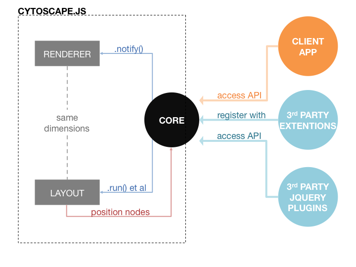

Cytoscape.js An open-source JavaScript graph theory library for analysis and visualisation (compatible with CommonJS/Node.js, AMD/Require.js, Bower, npm, jQuery 1.4+, and plain JavaScript)2.2.10
This is how easy it is to get started with Cytoscape.js. This code creates the instance you see on the bottom-right, which is used for API examples throughout the documentation:
// initialise cytoscape.js on a html dom element with some options:
cy = cytoscape( options = {
container: document.getElementById('cy'),
minZoom: 0.5,
maxZoom: 2,
// style can be specified as plain JSON, a stylesheet string (probably a CSS-like
// file pulled from the server), or in a functional format
style: [
{
selector: 'node',
css: {
'content': 'data(name)',
'font-family': 'helvetica',
'font-size': 14,
'text-outline-width': 3,
'text-outline-color': '#888',
'text-valign': 'center',
'color': '#fff',
'width': 'mapData(weight, 30, 80, 20, 50)',
'height': 'mapData(height, 0, 200, 10, 45)',
'border-color': '#fff'
}
},
{
selector: ':selected',
css: {
'background-color': '#000',
'line-color': '#000',
'target-arrow-color': '#000',
'text-outline-color': '#000'
}
},
{
selector: 'edge',
css: {
'width': 2,
'target-arrow-shape': 'triangle'
}
}
],
// specify the elements in the graph
elements: {
nodes: [
{ data: { id: 'j', name: 'Jerry', weight: 65, height: 174 } },
{ data: { id: 'e', name: 'Elaine', weight: 48, height: 160 } },
{ data: { id: 'k', name: 'Kramer', weight: 75, height: 185 } },
{ data: { id: 'g', name: 'George', weight: 70, height: 150 } }
],
edges: [
{ data: { source: 'j', target: 'e' } },
{ data: { source: 'j', target: 'k' } },
{ data: { source: 'j', target: 'g' } },
{ data: { source: 'e', target: 'j' } },
{ data: { source: 'e', target: 'k' } },
{ data: { source: 'k', target: 'j' } },
{ data: { source: 'k', target: 'e' } },
{ data: { source: 'k', target: 'g' } },
{ data: { source: 'g', target: 'j' } }
],
},
ready: function(){
// when layout has set initial node positions etc
}
} );Demos
Introduction
About
Cytoscape.js is an open-source graph theory library written in JavaScript. You can use Cytoscape.js for graph analysis and visualisation.
Cytoscape.js allows you to easily display and manipulate rich, interactive graphs. Because Cytoscape.js allows the user to interact with the graph and the library allows the client to hook into user events, Cytoscape.js is easily integrated into your webapp, especially since Cytoscape.js supports both desktop browsers, like Chrome, and mobile browsers, like on the iPad. Cytoscape.js includes all the gestures you would expect out-of-the-box, including pinch-to-zoom, box selection, panning, et cetera.
Cytoscape.js also has graph analysis in mind: The library contains a slew of useful functions in graph theory. You can use Cytoscape.js headlessly on Node.js to do graph analysis in the terminal or on a web server.
Cytoscape.js is an open-source project, and anyone is free to contribute. For more information, refer to the GitHub README.
The library was developed at the Donnelly Centre at the University of Toronto. It is the successor of Cytoscape Web.
Cytoscape.js & Cytoscape
Though Cytoscape.js shares its name with Cytoscape, Cytoscape.js is not exactly the same as Cytoscape desktop. Cytoscape.js is a JavaScript library for programmers. It is not an app for end-users, and developers need to write code around Cytoscape.js to build graphcentric webapps.
Cytoscape.js is a JavaScript library: It gives you a reusable graph widget that you can integrate with the rest of your webapp with your own JavaScript code. The keen members of the audience will point out that this means that Cytoscape plugins — written in Java — will obviously not work in Cytoscape.js — written in JavaScript. However, Cytoscape.js supports its own ecosystem of UI plugins and API extensions.
We are trying to make the two projects intercompatible as possible, and we do share philosophies with Cytoscape: Graph style and data should be separate, the library should provide core functionality with extensions adding functionality on top of the library, and so on.
Funding
Funding for Cytoscape.js and Cytoscape is provided by NRNB (U.S. National Institutes of Health, National Center for Research Resources grant numbers P41 RR031228 and GM103504) and by NIH grants 2R01GM070743 and 1U41HG006623. The following organizations help develop Cytoscape:
ISB | UCSD | MSKCC | Pasteur | Agilent | UCSF | Unilever | Toronto | NCIBI | NRNB
Notation
Graph model
Cytoscape.js supports many different graph theory usecases. It supports directed graphs, undirected graphs, mixed graphs, loops, multigraphs, compound graphs, and so on.
We are regularly making additions and enhancements to the library, and we gladly accept feature requests and pull requests.
Architecture & API
There are two components in the architecture that a developer need concern himself in order to use Cytoscape.js, the core and the collection. In Cytoscape.js, the core is a developer's main entry point into the library. From the core, a developer can run layouts, alter the viewport, and perform other operations on the graph as a whole.
The core provides several functions to access elements in the graph. Each of these functions returns a collection, a set of elements in the graph. A set of functions are available on collections that allow the developer to filter the collection, perform operations on the collection, traverse the graph about the collection, get data about elements in the collection, and so on.
Notation
There are several types that different functions can be executed on, and the variable names used to denote these types in the documentation are outlined below:
| Shorthand | Works on |
|---|---|
cy |
the core |
eles |
a collection of one or more elements (nodes and edges) |
ele |
a collection of a single element (node or edge) |
nodes |
a collection of one or more nodes |
node |
a collection of a single node |
edges |
a collection of one or more edges |
edge |
a collection of a single edge |
By default, a function returns a reference back to the calling object to allow for jQuery-like chaining (e.g. obj.fn1().fn2().fn3()). Unless otherwise indicated in this documentation, a function is chainable in this manner unless a different return value is specified. This applies both to the core and to collections.
For functions that return a value, note that calling a singular — ele, node, or edge — function on a collection of more than one element will return the expected value for only the first element.
Position
A node's position refers to the centre point of its bounding box.
There is an important distinction to make for position: A position may be a model position or a rendered position.
A model position — as its name suggests — is the position stored in the model for an element. An element's model position remains constant, despite changes to zoom and pan.
A rendered position is an on-screen location relative to the viewport. For example, a rendered position of { x: 100, y: 100 } specifies a point 100 pixels to the right and 100 pixels down from the top-left corner of the viewport. An element's rendered position naturally changes as zoom and pan changes, because the element's on-screen position in the viewport changes as zooming and panning are applied.
In this documentation, "position" refers to model position unless otherwise stated.
Elements JSON
Examples are given that outline format of the elements JSON used to load elements into Cytoscape.js:
cytoscape({
container: document.getElementById('cy'),
elements: [
{ // node n1
group: 'nodes', // 'nodes' for a node, 'edges' for an edge
// NB: id fields must be strings
data: { // element data (put dev data here)
id: 'n1', // mandatory for each element, assigned automatically on undefined
parent: 'nparent', // indicates the compound node parent id; not defined => no parent
},
position: { // the model position of the node (optional on init, mandatory after)
x: 100,
y: 100
},
selected: false, // whether the element is selected (default false)
selectable: true, // whether the selection state is mutable (default true)
locked: false, // when locked a node's position is immutable (default false)
grabbable: true, // whether the node can be grabbed and moved by the user
classes: 'foo bar', // a space separated list of class names that the element has
// NB: you should only use `css` for very special cases; use classes instead
css: { 'background-color': 'red' } // overriden style properties
},
{ // node n2
group: 'nodes',
data: { id: 'n2' },
renderedPosition: { x: 200, y: 200 } // can alternatively specify position in rendered on-screen pixels
},
{ // node n3
group: 'nodes',
data: { id: 'n3', parent: 'nparent' },
position: { x: 123, y: 234 }
},
{ // node nparent
group: 'nodes',
data: { id: 'nparent', position: { x: 200, y: 100 } }
},
{ // edge e1
group: 'edges',
data: {
id: 'e1',
source: 'n1', // the source node id (edge comes from this node)
target: 'n2' // the target node id (edge goes to this node)
}
}
],
layout: {
name: 'preset'
},
// so we can see the ids
style: [
{
selector: 'node',
css: {
'content': 'data(id)'
}
}
]
});
Compound nodes
Compound nodes are an addition to the traditional graph model. A compound node contains a number of child nodes, similar to how a HTML DOM element can contain a number of child elements.
Compound nodes are specified via the parent field in an element's data. Similar to the source and target fields of edges, the parent field is immutable: A node's parent can be specified when the node is added to the graph, and after that point, this parent-child relationship can not be changed. Of course, you can clone an element, modify it, and then add it to the graph to effectively "modify" immutable fields while keeping the graph model consistent.
As far as the API is concerned, compound nodes are treated just like regular nodes — except in explicitly compound functions like node.parent(). This means that traditional graph theory functions like eles.dijkstra() and eles.neighborhood() do not make special allowances for compound nodes, so you may need to make different calls to the API depending on your usecase.
For instance:
var a = cy.$('#a'); // assume a compound node
// the neighbourhood of `a` contains directly connected elements
var directlyConnected = a.neighborhood();
// you may want everything connected to its descendants instead
// because the descendants "belong" to `a`
var indirectlyConnected = a.add( a.descendants() ).neighborhood();
Performance
Background
You may notice that performance starts to degrade on graphs with large numbers of elements. This happens for several reasons:
- Performance is a function of graph size, so performance decreases as the number of elements increases.
- The rich visual styles that Cytoscape.js supports can be very expensive. Only drawing circles and straight lines is cheap, but drawing complex graphs is not.
- Edges are particularly expensive to render. Multigraphs become even more expensive with the need for bezier curve edges.
- Interactivity is expensive. Being able to pan, pinch-to-zoom, drag nodes around, et cetera is expensive — especially when having to rerender edges.
Optimisations
You can get much better performance out of Cytoscape.js by tuning your options, in descending order of significance:
- Haystacks make fast edges : Set your edges
curve-styletohaystackin your stylesheet. Haystack edges are straight lines, which are much less expensive to render thanbezieredges. - Hide edges during interactivity : Set
hideEdgesOnViewporttotruein your initialisation options. This makes interactivity a lot less expensive by hiding edges during pan, mouse wheel zoom, pinch-to-zoom, and node drag actions. - Hide labels during interactivity : Set
hideLabelsOnViewporttotruein your initialisation options. This works similarly to hiding edges on viewport operations. - Use textured zoom & pan : Set
textureOnViewporttotruein your initialisation options. Rather than rerendering the entire scene, this makes a texture cache of the viewport at the start of pan and zoom operations, and manipulates that instead. Makes panning and zooming much smoother for large graphs. - Animations : You will get better performance without animations. If using animations anyway:
- Try to limit the number of concurrent animating elements.
- When using transition animations in the style, make sure
transition-propertyis defined only for states that you want to animate. If you havetransition-propertydefined in a default state, the animation will try to run more often than if you limit it to particular states you actually want to animate.
- Edge selection : If your app does not need edge selection, you can get performance gains by unselectifying edges (i.e.
edges.unselectify()). This disables selection for edges, so their style will not have to be recalculated during box selection et cetera. - Labels : Drawing labels is expensive.
- If you can go without them or show them on tap/mouseover, you'll get better performance.
- Consider not having labels for edges.
- Consider setting
min-zoomed-font-sizein your style so that when labels are small — and hard to read anyway — they are not rendered. When the labels are at least the size you set (i.e. the user zooms in), they will be visible.
- Simplify edge style : Use solid edges. Dotted and dashed edges are much more expensive to draw, so you will get increased performance by not using them.
- Simplify node style : Keep your node styles simple to improve performance.
- Background images are very expensive in certain cases. The most performant background images are non-repeating (
background-repeat: no-repeat) and non-clipped (background-clip: none). For simple node shapes like squares or circles, you can usebackground-fitfor scaling and preclip your images to simulate software clipping (e.g. with https://github.com/scalableminds/gulp-image-resize so it's automated). In lieu of preclipping, you could make clever use of PNGs with transparent backgrounds. - Node borders can be slightly expensive, so you can experiment with removing them to see if it makes a noticeable difference for your use case.
- Background images are very expensive in certain cases. The most performant background images are non-repeating (
- Opacity : Making elements semitransparent is more expensive than leaving them opaque. Try to use
visibility: hiddenordisplay: noneto hide elements rather than using opacity. - Concise stylsheets are fast stylesheets : Try to keep your stylesheets from getting overly long. Cut out unused blocks and try to limit the number of blocks — and therefore selectors — you have. Each time style needs to be recalculated, each block's selector needs to be compared to each element. Note that usually stylesheet length has a much lesser effect on performance than other factors.
By making these optimisations, you can increase the performance of Cytoscape.js such that you can have high performance graphs several orders of magnitude greater in size.
Selectors
Notes & caveats
A selector functions similar to a jQuery selector on DOM elements, but selectors in Cytoscape.js instead work on collections.
The selectors can be combined together to make powerful queries in Cytoscape.js, for example:
// get all nodes with weight more than 50 and height strictly less than 180
cy.elements("node[weight >= 50][height < 180]");
Selectors can be joined together (effectively creating a logical OR) with commas:
// get node j and the edges coming out from it
cy.elements('node#j, edge[source = "j"]');
It is important to note that strings need to be enclosed by quotation marks:
//cy.filter('node[name = Jerry]'); // this doesn't work
cy.filter('node[name = "Jerry"]'); // but this does
Note that metacharacters need to be escaped:
cy.filter('#some\\$funky\\@id');
Group, class, & ID
node, edge, or * (group selector)
Matches elements based on group (node for nodes, edge for edges, * for all).
.className
Matches elements that have the specified class (e.g. use .foo for a class named "foo").
#id
Matches element with the matching ID (e.g. #foo is the same as [id = 'foo'])
Data
[name]
Matches elements if they have the specified data attribute defined, i.e. not undefined (e.g. [foo] for an attribute named "foo"). Here, null is considered a defined value.
[^name]
Matches elements if the specified data attribute is not defined, i.e. undefined (e.g [^foo]). Here, null is considered a defined value.
[?name]
Matches elements if the specified data attribute is a truthy value (e.g. [?foo]).
[!name]
Matches elements if the specified data attribute is a falsey value (e.g. [!foo]).
[name = value]
Matches elements if their data attribute matches a specified value (e.g. [foo = 'bar'] or [num = 2]).
[name != value]
Matches elements if their data attribute doesn't match a specified value (e.g. [foo != 'bar'] or [num != 2]).
[name > value]
Matches elements if their data attribute is greater than a specified value (e.g. [foo > 'bar'] or [num > 2]).
[name >= value]
Matches elements if their data attribute is greater than or equal to a specified value (e.g. [foo >= 'bar'] or [num >= 2]).
[name < value]
Matches elements if their data attribute is less than a specified value (e.g. [foo < 'bar'] or [num < 2]).
[name <= value]
Matches elements if their data attribute is less than or equal to a specified value (e.g. [foo <= 'bar'] or [num <= 2]).
[name *= value]
Matches elements if their data attribute contains the specified value as a substring (e.g. [foo *= 'bar']).
[name ^= value]
Matches elements if their data attribute starts with the specified value (e.g. [foo ^= 'bar']).
[name $= value]
Matches elements if their data attribute ends with the specified value (e.g. [foo $= 'bar']).
@ (data attribute operator modifier)
Prepended to an operator so that is case insensitive (e.g. [foo @$= 'ar'], [foo @>= 'a'], [foo @= 'bar'])
[[]] (metadata brackets)
Use double square brackets in place of square ones to match against metadata instead of data (e.g. [[degree > 2]] matches elements of degree greater than 2). The properties that are supported include degree, indegree, and outdegree.
Compound nodes
> (child selector)
Matches direct children of the parent node (e.g. node > node).
(descendant selector)
Matches descendants of the parent node (e.g. node node).
$ (subject selector)
Sets the subject of the selector (e.g. $node > node to select the parent nodes instead of the children).
State
Animation
:animated: Matches elements that are currently being animated.:unanimated: Matches elements that are not currently being animated.
Selection
:selected: Matches selected elements.:unselected: Matches elements that aren't selected.:selectable: Matches elements that are selectable.:unselectable: Matches elements that aren't selectable.
Locking
:locked: Matches locked elements.:unlocked: Matches elements that aren't locked.
Visibility
:visible: Matches elements that are visible (i.e.display: elementandvisibility: visible).:hidden: Matches elements that are hidden (i.e.display: noneorvisibility: hidden).:transparent: Matches elements that are transparent (i.e.opacity: 0for self or parents).
User interaction:
:grabbed: Matches elements that are being grabbed by the user.:free: Matches elements that are not currently being grabbed by the user.:grabbable: Matches elements that are grabbable by the user.:ungrabbable: Matches elements that are not grabbable by the user.:active: Matches elements that are active (i.e. user interaction, similar to:activein CSS).:inactive: Matches elements that are inactive (i.e. no user interaction).:touch: Matches elements when displayed in a touch-based enviroment (e.g. on a tablet).
In or out of graph
:removed: Matches elements that have been removed from the graph.:inside: Matches elements that have are in the graph (they are not removed).
Compound nodes
:parent: Matches parent nodes (they have one or more child nodes).:child: Matches child nodes (they each have a parent).
Edges
:loop: Matches loop edges (same source as target).:simple: Matches simple edges (i.e. as would be in a simple graph, different source as target).
Style
Style in Cytoscape.js follows CSS conventions as closely as possible. In most cases, a property has the same name and behaviour as its corresponding CSS namesake. However, the properties in CSS are not sufficient to specify the style of some parts of the graph. In that case, additional properties are introduced that are unique to Cytoscape.js.
It is important to note that in your stylesheet, specificity rules are completely ignored. In CSS, specificity often makes stylesheets behave in ways contrary to developer's natural mental model. This is terrible, because it wastes time and overcomplicates things. Thus, there is no analogue of CSS specificity in Cytoscape.js stylesheets. For a given style property for a given element, the last matching selector wins. In general, you should be using something along the lines of OOCSS principles, anyway — making specificity essentially irrelevant.
Format
The style specified at initialisation can be in a functional format, in a plain JSON format, or in a string format — the plain JSON format and string formats being more useful if you want to pull down the style from the server. If you pull the style from the server, you must initialise Cytoscape.js after the style has been loaded.
String format
Note that the trailing semicolons for each property are mandatory. Parsing will certainly fail without them.
An example style file:
/* comments may be entered like this */
node {
background-color: green;
}
At initialisation:
$('#cy').cytoscape({
// ...
style: 'node { background-color: green; }' // probably previously loaded via ajax rather than hardcoded
// , ...
});
Plain JSON format
$('#cy').cytoscape({
// ...
style: [
{
selector: 'node',
css: {
'background-color': 'red'
}
}
// , ...
]
// , ...
});
Functional format
$('#cy').cytoscape({
// ...
style: cytoscape.stylesheet()
.selector('node')
.css({
'background-color': 'blue'
})
// ...
// , ...
});
Properties
Notes
- Colours may be specified by name (e.g.
red), hex (e.g.#ff0000or#f00), RGB (e.g.rgb(255, 0, 0)), or HSL (e.g.hsl(0, 100%, 50%)). - Values requiring a number, such as a length, can be specified in pixel values (e.g.
24px), unitless values that are implicitly in pixels (24), or em values (e.g.2em). - Opacity values are specified as numbers ranging on
0 <= opacity <= 1.
Element properties
These properties can be used on any element.
Labels:
color: The colour of the element's label.content: The text to display for an element's label.font-family: A comma-separated list of font names to use on the label text.font-size: The size of the label text.font-style: A CSS font style to be applied to the label text.font-weight: A CSS font weight to be applied to the label text.text-opacity: The opacity of the label text, including its outline.text-outline-color: The colour of the outline around the element's label text.text-outline-opacity: The opacity of the outline on label text.text-outline-width: The size of the outline on label text.min-zoomed-font-size: If zooming makes the effective font size of the label smaller than this, then no label is shown.
Size & visibility:
opacity: The opacity of the element.visibility: Whether the element is visible; can bevisibleorhidden.width: The element's width; the line width for edges or the horizontal size of a node.z-index: A non-negative integer that specifies the z-ordering of the element. An element with a higherz-indexis put on top of an element with a lower value.
Overlays (e.g. used in :active state):
overlay-color: The colour of the overlay.overlay-padding: The area outside of the element within which the overlay is shown.overlay-opacity: The opacity of the overlay.
Transition animations:
transition-property: A comma separated list of style properties to animate in this state.transition-duration: The length of the transition in seconds (e.g.0.5s).transition-delay: The length of the delay in seconds before the transition occurs (e.g.0.25s).
Node properties
These properties apply only to nodes.
Labels:
text-halign: The vertical alignment of a label; may have valueleft,center, orright.text-valign: The vertical alignment of a label; may have valuetop,center, orbottom.
Body:
background-color: The colour of the node's body.background-blacken: Blackens the node's body for values from 0 to 1; whitens the node's body for values from 0 to -1.background-opacity: The opacity level of the node's body.border-color: The colour of the node's border.border-opacity: The opacity of the node's border.border-width: The size of the node's border.height: The height of the node's body.shape: The shape of the node's body; may berectangle,roundrectangle,ellipse,triangle,pentagon,hexagon,heptagon,octagon,star. Note that each shape fits within the specifiedwidthandheight, and so you may have to adjustwidthandheightif you desire an equilateral shape (i.e.width !== heightfor several equilateral shapes).
Background image:
background-image: The URL that points to the image that should be used as the node's background. PNG, JPG, and SVG are supported formats.background-fit: How the background image is fit to the node; may benonefor original size,containto fit inside node, orcoverto cover the node.background-repeat: Whether to repeat the background image; may beno-repeat,repeat-x,repeat-y, orrepeat.background-position-x: The x position of the background image, measured in percent (e.g.50%) or pixels (e.g.10px).background-position-y: The y position of the background image, measured in percent (e.g.50%) or pixels (e.g.10px).background-clip: How background image clipping is handled; may benodefor clipped to node shape ornonefor no clipping.
Pie chart background:
These properties allow you to create pie chart backgrounds on nodes. Note that 16 slices maximum are supported per node, so in the properties 1 <= i <= 16. Of course, you must specify a numerical value for each property in place of i. Each nonzero sized slice is placed in order of i, starting from the 12 o'clock position and working clockwise.
You may find it useful to reserve a number to a particular colour for all nodes in your stylesheet. Then you can specify values for pie-i-background-size accordingly for each node via a mapper. This would allow you to create consistently coloured pie charts in each node of the graph based on element data.
pie-size: The diameter of the pie, measured as a percent of node size (e.g.100%) or an absolute length (e.g.25px).pie-i-background-color: The colour of the node's ith pie chart slice.pie-i-background-size: The size of the node's ith pie chart slice, measured in percent (e.g.25%or25).
Compound nodes:
padding-left: The size of the area on the left of the compound node that can not be occupied by child nodes.padding-right: The size of the area on the right of the compound node that can not be occupied by child nodes.padding-top: The size of the area on the top of the compound node that can not be occupied by child nodes.padding-bottom: The size of the area on the bottom of the compound node that can not be occupied by child nodes.
Edge properties
These properties apply only to edges:
curve-style: The curving method used to separate two or more edges between two nodes; may bebezier(default) orhaystack(for which loops are unsupported). Note thathaystackedges work best withellipse,rectangle, or similar nodes. Smaller node shapes, liketriangle, will not be as aesthetically pleasing. Also note that edge arrows are unsupported forhaystackedges.control-point-step-size: From the line perpendicular from source to target, this value specifies the distance between successive bezier edges.control-point-distance: Overridescontrol-point-step-sizewith a manual value. Because it overrides the step size, bezier edges with the same value will overlap. Thus, it's best to use this as a one-off value for particular edges if need be.control-point-weight: Weights control points along the line from source to target. This value ranges on [0, 1], with 0 towards the source node and 1 towards the target node.line-color: The colour of the edge's line.line-style: The style of the edge's line; may besolid,dotted, ordashed.source-arrow-color: The colour of the edge's arrow on the source side.source-arrow-shape: The shape of the edge's arrow on the source side; may betee,triangle,square,circle,diamond, ornone.source-arrow-fill: The fill state of the edge's source arrow; may befilledorhollow.target-arrow-color: The colour of the edge's arrow on the target side.target-arrow-shape: The shape of the edge's arrow on the target side; may betee,triangle,square,circle,diamond, ornone.target-arrow-fill: The fill state of the edge's target arrow; may befilledorhollow.
Core properties
These properties apply only to the core. You can use the special core selector string to set these properties.
active-bg-color: The colour of the indicator shown when the background is grabbed by the user.active-bg-opacity: The opacity of the active background indicator.active-bg-size: The size of the active background indicator.selection-box-color: The background colour of the selection box used for drag selection.selection-box-border-color: The colour of the border on the selection box.selection-box-border-width: The size of the border on the selection box.selection-box-opacity: The opacity of the selection box.outside-texture-bg-color: The colour of the area outside the viewport texture wheninitOptions.textureOnViewport === true.outside-texture-bg-opacity: The opacity of the area outside the viewport texture.
Mappers
In addition to specifying the value of a property outright, the developer may also use a mapper to dynamically specify the property value.
data() specifies a direct mapping to an element's data field. For example, data(descr) would map a property to the value in an element's descr field in its data (i.e. ele.data("descr")). This is useful for mapping to properties like label text content (the content property).
mapData() specifies a linear mapping to an element's data field. For example, data(weight, 0, 100, blue, red) maps an element's weight to gradients between blue and red for weights between 0 and 100. An element with ele.data("weight") === 0 would be mapped to blue, for instance. Elements whose values fall outside of the specified range are mapped to the extremity values. In the previous example, an element with ele.data("weight") === -1 would be mapped to blue.
mapLayoutData() specifies a linear mapping like mapData() but uses special layout defined values (only supported for some layouts).
Events
Event object
Events passed to handler callbacks are similar to jQuery event objects in that they wrap native event objects, mimicking their API.
Fields:
cy: a reference to the corresponding core instancecyTarget: indicates the element or core that first caused the eventtype: the event type string (e.g."tap")namespace: the event namespace string (e.g."foo"for"foo.tap")data: additional data object passed by.trigger()timeStamp: Unix epoch time of event
Fields for only user input device events:
cyPosition: indicates the model position of the eventcyRenderedPosition: indicates the rendered position of the eventoriginalEvent: the original user input device event object
Event bubbling
All events that occur on elements get bubbled up to the core. You must take this into consideration when binding to the core so you can differentiate between events that happened on the background and ones that happened on elements. Use the eventObj.cyTarget field, which indicates the originator of the event (i.e. eventObj.cyTarget === cy || eventObj.cyTarget === someEle).
User input device events
These are normal browser events that you can bind to via Cytoscape.js. You can bind these events to the core and to collections.
mousedown: when the mouse button is pressedmouseup: when the mouse button is releasedclick: aftermousedownthenmouseupmouseover: when the cursor is put on top of the targetmouseout: when the cursor is moved off of the targetmousemove: when the cursor is moved somewhere on top of the targettouchstart: when one or more fingers starts to touch the screentouchmove: when one or more fingers are moved on the screentouchend: when one or more fingers are removed from the screen
There are also some higher level events that you can use so you don't have to bind to different events for mouse-input devices and for touch devices.
tapstartorvmousedown: normalised tap start event (eithermousedownortouchstart)tapdragorvmousemove: normalised move event (eithertouchmoveormousemove)tapdragover: normalised over element event (eithertouchmoveormousemove/mouseover)tapdragout: normalised off of element event (eithertouchmoveormousemove/mouseout)tapendorvmouseup: normalised tap end event (eithermouseuportouchend)taporvclick: normalised tap event (eitherclick, ortouchstartfollowed bytouchendwithouttouchmove)taphold: normalised tap hold eventcxttapstart: normalised right-click mousedown or two-fingertapstartcxttapend: normalised right-clickmouseupor two-fingertapendcxttap: normalised right-click or two-fingertapcxtdrag: normalised mousemove or two-finger drag aftercxttapstartbut beforecxttapendcxtdragover: when going over a node viacxtdragcxtdragout: when going off a node viacxtdrag
Collection events
These events are custom to Cytoscape.js. You can bind to these events for collections.
add: when an element is added to the graphremove: when an element is removed from the graphselect: when an element is selectedunselect: when an element is unselectedlock: when an element is lockedunlock: when an element is unlockedgrab: when an element is grabbed by the mouse cursor or a finger on a touch inputdrag: when an element is grabbed and then movedfree: when an element is freed (i.e. let go from being grabbed)position: when an element changes positiondata: when an element's data is changedstyle: when an element's style is changed
Graph events
These events are custom to Cytoscape.js, and they occur on the core.
layoutstart: when a layout starts runninglayoutready: when a layout has set initial positions for all the nodes (but perhaps not final positions)layoutstop: when a layout has finished running completely or otherwise stopped runningload: when a new graph is loaded via initialisation orcy.load()ready: when a new instance of Cytoscape.js is ready to be interacted withinitrender: when the first frame is drawn by the renderer (useful for synchronising with image exports etc)done: when a new instance of Cytoscape.js is ready to be interacted with and its initial layout has finished runningpan: when the viewport is pannedzoom: when the viewport is zoomed
Layouts
The function of a layout is to set the positions on the nodes in the graph. Layouts are extensions of Cytoscape.js such that it is possible for anyone to write a layout without modifying the library itself.
Several layouts are included with Cytoscape.js by default, and their options are described in the sections that follow with the default values specified. Note that you must set options.name to the name of the layout to specify which one you want to run.
Null
The null layout puts all nodes at (0, 0). It's useful for debugging purposes.
options = {
name: 'null',
ready: function(){}, // on layoutready
stop: function(){} // on layoutstop
}
cy.layout( options );
Random
The random layout puts nodes in random positions within the viewport.
options = {
name: 'random',
ready: undefined, // callback on layoutready
stop: undefined, // callback on layoutstop
fit: true // whether to fit to viewport
};
cy.layout( options );
Preset
The preset layout puts nodes in the positions you specify manually.
options = {
name: 'preset',
fit: true, // whether to fit to viewport
ready: undefined, // callback on layoutready
stop: undefined, // callback on layoutstop
positions: undefined, // map of (node id) => (position obj)
zoom: undefined, // the zoom level to set (prob want fit = false if set)
pan: undefined, // the pan level to set (prob want fit = false if set)
padding: 30 // padding on fit
};
cy.layout( options );
Grid
The grid layout puts nodes in a well-spaced grid.
options = {
name: 'grid',
fit: true, // whether to fit the viewport to the graph
padding: 30, // padding used on fit
rows: undefined, // force num of rows in the grid
columns: undefined, // force num of cols in the grid
position: function( node ){}, // returns { row, col } for element
ready: undefined, // callback on layoutready
stop: undefined // callback on layoutstop
};
cy.layout( options );
Circle
The circle layout puts nodes in a circle.
options = {
name: 'circle',
fit: true, // whether to fit the viewport to the graph
ready: undefined, // callback on layoutready
stop: undefined, // callback on layoutstop
rStepSize: 10, // the step size for increasing the radius if the nodes don't fit on screen
padding: 30, // the padding on fit
startAngle: 3/2 * Math.PI, // the position of the first node
counterclockwise: false // whether the layout should go counterclockwise (true) or clockwise (false)
};
cy.layout( options );
Concentric
The concentric layout positions nodes in concentric circles, based on a metric that you specify to segregate the nodes into levels. This layout sets the concentric layout value based on your metric, which can be used with mapLayoutData().
options = {
name: 'concentric',
fit: true, // whether to fit the viewport to the graph
ready: undefined, // callback on layoutready
stop: undefined, // callback on layoutstop
padding: 30, // the padding on fit
startAngle: 3/2 * Math.PI, // the position of the first node
counterclockwise: false, // whether the layout should go counterclockwise (true) or clockwise (false)
minNodeSpacing: 10, // min spacing between outside of nodes (used for radius adjustment)
height: undefined, // height of layout area (overrides container height)
width: undefined, // width of layout area (overrides container width)
concentric: function(){ // returns numeric value for each node, placing higher nodes in levels towards the centre
return this.degree();
},
levelWidth: function(nodes){ // the variation of concentric values in each level
return nodes.maxDegree() / 4;
}
};
cy.layout( options );
Breadthfirst
The breadthfirst layout puts nodes in a hierarchy, based on a breadthfirst traversal of the graph.
options = {
name: 'breadthfirst',
fit: true, // whether to fit the viewport to the graph
ready: undefined, // callback on layoutready
stop: undefined, // callback on layoutstop
directed: false, // whether the tree is directed downwards (or edges can point in any direction if false)
padding: 30, // padding on fit
circle: false, // put depths in concentric circles if true, put depths top down if false
roots: undefined, // the roots of the trees
maximalAdjustments: 0 // how many times to try to position the nodes in a maximal way (i.e. no backtracking)
};
cy.layout( options );
Arbor
The arbor layout uses a force-directed physics simulation.
options = {
name: 'arbor',
liveUpdate: true, // whether to show the layout as it's running
ready: undefined, // callback on layoutready
stop: undefined, // callback on layoutstop
maxSimulationTime: 4000, // max length in ms to run the layout
fit: true, // reset viewport to fit default simulationBounds
padding: [ 50, 50, 50, 50 ], // top, right, bottom, left
simulationBounds: undefined, // [x1, y1, x2, y2]; [0, 0, width, height] by default
ungrabifyWhileSimulating: true, // so you can't drag nodes during layout
// forces used by arbor (use arbor default on undefined)
repulsion: undefined,
stiffness: undefined,
friction: undefined,
gravity: true,
fps: undefined,
precision: undefined,
// static numbers or functions that dynamically return what these
// values should be for each element
nodeMass: undefined,
edgeLength: undefined,
stepSize: 1, // size of timestep in simulation
// function that returns true if the system is stable to indicate
// that the layout can be stopped
stableEnergy: function( energy ){
var e = energy;
return (e.max <= 0.5) || (e.mean <= 0.3);
}
};
cy.layout( options );
Notes about arbor:
- For webworkers to work properly, you need to point your browser to a server URL (e.g.
http://) rather than a local address (e.g.file://). - Please note that the
liveUpdateoption is expensive, so if you are concerned about running time (e.g. for large graphs), you should set it tofalse. - NB: You must reference the version of
arbor.jsincluded with Cytoscape.js in the<head>of your HTML document:
<head>
...
<script src="arbor.js"></script>
...
</head>
Arbor does some automatic path finding because it uses web workers, and so it must be included this way. Therefore, you can not combine arbor.js with your other JavaScript files — as you probably would as a part of the minification of the scripts in your webapp.
CoSE
The cose (Compound Spring Embedder) layout uses a force-directed simulation to lay out compound graphs.
It was implemented by Gerardo Huck as part of Google Summer of Code 2013 (Mentors: Max Franz, Christian Lopes, Anders Riutta, Ugur Dogrusoz).
Based on the article "A layout algorithm for undirected compound graphs" by Ugur Dogrusoz, Erhan Giral, Ahmet Cetintas, Ali Civril and Emek Demir.
options = {
name: 'cose',
// Called on `layoutready`
ready : function() {},
// Called on `layoutstop`
stop : function() {},
// Number of iterations between consecutive screen positions update (0 -> only updated on the end)
refresh : 0,
// Whether to fit the network view after when done
fit : true,
// Padding on fit
padding : 30,
// Whether to randomize node positions on the beginning
randomize : true,
// Whether to use the JS console to print debug messages
debug : false,
// Node repulsion (non overlapping) multiplier
nodeRepulsion : 10000,
// Node repulsion (overlapping) multiplier
nodeOverlap : 10,
// Ideal edge (non nested) length
idealEdgeLength : 10,
// Divisor to compute edge forces
edgeElasticity : 100,
// Nesting factor (multiplier) to compute ideal edge length for nested edges
nestingFactor : 5,
// Gravity force (constant)
gravity : 250,
// Maximum number of iterations to perform
numIter : 100,
// Initial temperature (maximum node displacement)
initialTemp : 200,
// Cooling factor (how the temperature is reduced between consecutive iterations
coolingFactor : 0.95,
// Lower temperature threshold (below this point the layout will end)
minTemp : 1
};
cy.layout( options );
Extensions
cxtmenu: A circular context menu.edgehandles: UI for connecting nodes with edges.navigator: A bird's eye view widget of the graph.panzoom: A panzoom UI widget.qtip: A wrapper that lets you use qTips on graph elements or the graph background.
The above extensions are a curated list. To add your extension, please submit a pull request that adds your extension to the documentation configuration JSON file. Once pulled in, your extension will be listed with the next publish of the documentation.
API
The API makes it very easy to write an extension, following this format:
cytoscape( type, name, extension );
The value of type can take on the following values:
core: The extension adds a core function.collection: The extension adds a collection function.layout: The extension registers a layout prototype.renderer: The extension registers a renderer prototype.
The name argument indicates the name of the extension, which should be a single word in lower case.
Functions
Functions should be chainable, unless they need to return some other value. To make a function chainable, make sure to return this; at the end of your function.
Here is an example collection function:
cytoscape('collection', 'forEach', function( fn ){
for( var i = 0; i < this.length; i++ ){
fn.apply( this[i], [ i, this[i] ] );
}
return this; // chainability
});
cy.elements().forEach(function(){
console.log( 'forEach ' + this.id() );
});
Layouts
A layout modifies the positions of nodes in the graph. A layout has number of options, which are specific to the particular layout.
Layouts may be blocking if they are fast — meaning you can execute your code to run after the layout on the line following the layout call. Layouts may also be continuous, in which case, callback functions are provided to know when the layout finishes.
A layout has two events that must be triggereed on the core, including layoutready and layoutstop:
layoutready: This is triggered on the core (viacy.trigger('layoutready')) when the layout has set the positions on every node at least once. This lets the core know that the nodes now have valid positions and can be rendered. It is important to triggerlayoutreadyon continuous layouts so that the nodes are shown moving. For blocking (non-continous) layouts,layoutreadycan just be triggered after the layout is done but beforelayoutstop.layoutstop: This is triggered on the core (viacy.trigger('layoutstop')) when the layout has finished. It should be triggered afterlayoutready. The layout should not change node positions after triggeringlayoutstop.
For an example layout, please refer to the null layout source code. The layout just sets each node to position (0, 0), and it is well documented. The Arbor layout is a good example of a continuous layout.
Renderers
For an example renderer, please refer to the canvas renderer.
The API of the renderer follows the actor model, and so it has a single main entry point, the notify() function. The core uses the notify() function to send event objects to the renderer. The format of the event object is as follows:
event.type: A string containing the name of the event that has occured.event.collection: A collection of elements associated with the event.
If you're interested in writing a custom renderer for Cytoscape.js, please file an issue for more help if needed.
Core
The core object is your interface to the Cytoscape.js visualisation. It is your entry point to Cytoscape.js: All of the library's features are accessed through this object.
Initialisation
Script includes
To use Cytoscape.js in your HTML document:
<script src="cytoscape.js"></script>
Note that Cytoscape.js uses the dimensions of your HTML DOM element container for layouts and rendering at initialisation. Thus, it is very important to place your CSS stylesheets in the <head> before any Cytoscape.js scripts. Otherwise, dimensions may be sporadically reported incorrectly, resulting in undesired behaviour.
Also note that you should call cy.resize() when your code resizes the viewport.
To install Cytoscape.js via npm:
npm install cytoscape
To use Cytoscape.js in a CommonJS environment like Node.js:
var cytoscape = require('cytoscape');
To use Cytoscape.js with AMD/Require.js:
require(['cytoscape'], function(cytoscape){
// ...
});
To install Cytoscape.js via Bower (in the terminal):
bower install cytoscape
Getting started
An instance of Cytoscape.js correponds to a graph. You can create an instance as follows:
cytoscape({
container: document.getElementById('cy'),
ready: function(){ console.log('ready') }
});
If you are running Cytoscape.js in Node.js or otherwise running it headlessly, you will not specify the container option. When running Cytoscape.js headlessly in the browser, you should specify options.renderer.name as 'null' so that the default canvas renderer is not used to draw the graph. Outside of the browser (e.g. in Node.js), the null renderer is used by default.
You can alternatively initialise Cytoscape.js on a HTML DOM element using jQuery:
$('#cy').cytoscape({ // for some div with id 'cy'
ready: function(){
// you can access the core object API through cy
console.log('ready');
}
// , ...
});
This initialises Cytoscape.js and returns back to you your instance of jQuery. You can continue using jQuery functions, as usual for a jQuery plugin.
For example,
$('#cy').cytoscape(options)
.css('background', 'red')
.css('border-color', 'black'); // can use jquery functions on 'cy' div
Because this style doesn't give you access to the cy object outside of the callback function, there is an option to get the cy object from a jQuery selector.
$('#cy').cytoscape(options);
var cy = $('#cy').cytoscape('get'); // now we have a global reference to `cy`
The ready callback
Part of initialising Cytoscape.js is synchronous and part is asynchronous. The potentially asynchronous part is the initial layout, which may be used for setting the initial positions of nodes. If you use an asynchronous layout at initialisation, you may want to use ready. You can guarantee that the initial layout takes no time if you specify all node positions manually and use the preset layout — which does nothing unless you pass specific layout options to it.
Initialisation options
An instance of Cytoscape.js has a number of options that can be set on initialisation. They are outlined below with their default values.
Note that everything is optional. By default, you get an empty graph with the default stylesheet.
cytoscape({
container: undefined,
selectionType: (isTouchDevice ? 'additive' : 'single'),
layout: { name: 'grid' /* , ... */ },
zoom: 1,
minZoom: 1e-50,
maxZoom: 1e50,
zoomingEnabled: true,
userZoomingEnabled: true,
pan: { x: 0, y: 0 },
panningEnabled: true,
userPanningEnabled: true,
autoungrabifyNodes: false,
hideEdgesOnViewport: false,
hideLabelsOnViewport: false,
textureOnViewport: false,
renderer: { /* ... */ },
style: undefined /* ... */,
ready: function(evt){ /* ... */ },
initrender: function(evt){ /* ... */ },
elements: [ /* ... */ ]
});
container : A HTML DOM element in which the graph should be rendered. This is optional if Cytoscape.js is run headlessly or if you initialise using jQuery (in which case your jQuery object already has an associated DOM element).
selectionType : A string indicating the selection behaviour from user input. By default, this is set automatically for you based on the type of input device detected. On touch devices, 'additive' is default — a new selection made by the user adds to the set of currenly selected elements. On mouse-input devices, 'single' is default — a new selection made by the user becomes the entire set of currently selected elements (i.e. the previous elements are unselected).
layout : A plain object that specifies layout options. Which layout is initially run is specified by the name field. Refer to a layout's documentation for the options it supports. If you want to specify your node positions yourself in your elements JSON, you can use the preset layout — by default it does not set any positions, leaving your nodes in their current positions (e.g. specified in options.elements at initialisation time).
zoom : The initial zoom level of the graph. Make sure to disable viewport manipulation options, such as fit, in your layout so that it is not overridden when the layout is applied. You can set options.minZoom and options.maxZoom to set restrictions on the zoom level.
zoomingEnabled : Whether zooming the graph is enabled, both by user events and programmatically.
userZoomingEnabled : Whether user events (e.g. mouse wheel, pinch-to-zoom) are allowed to zoom the graph. Programmatic changes to zoom are unaffected by this option.
pan : The initial panning position of the graph. Make sure to disable viewport manipulation options, such as fit, in your layout so that it is not overridden when the layout is applied.
panningEnabled : Whether panning the graph is enabled, both by user events and programmatically.
userPanningEnabled : Whether user events (e.g. dragging the graph background) are allowed to pan the graph. Programmatic changes to pan are unaffected by this option.
autoungrabifyNodes : Whether nodes should be ungrabified (not grabbable by user) by default (if true, overrides individual node state).
hideEdgesOnViewport : When set to true, the renderer does not render edges while the viewport is being manipulated. This makes panning, zooming, dragging, et cetera more responsive for large graphs.
hideLabelsOnViewport : When set to true, the renderer does not render labels while the viewport is being manipulated. This makes panning, zooming, dragging, et cetera more responsive for large graphs.
textureOnViewport : When set to true, the renderer uses a texture (if supported) during panning and zooming instead of drawing the elements, making large graphs more responsive.
renderer : A plain object containing options for the renderer to be used. The options.renderer.name field specifies which renderer is used. You need not specify anything for the renderer option, unless you want to specify one of the rendering options below:
renderer.name: The name of the renderer to use. By default, the'canvas'renderer is used. If you build and register your own renderer, then you can specify its name here.
style : The stylesheet used to style the document.
For example:
$('#cy').cytoscape({
/* ... */
// could be JSON, functional style, or string (probably pulled from a file)
style: [
{
selector: 'node',
css: {
'background-color': 'red',
'border-color': '#ffff00'
}
},
{
selector: 'edge',
css: {
'line-color': 'blue'
}
}
]
/* ... */
});
ready : A callback function that is called when Cytoscape.js has loaded the graph and the layout has specified initial positions of the nodes. After this point, rendering can happen, the user can interact with the graph, et cetera.
initrender : A callback function that is called when Cytoscape.js has rendered its first frame. This is useful for grabbing screenshots etc after initialision, but in general you should use ready instead.
elements : An array of elements specified as plain objects.
For example:
$('#cy').cytoscape({
/* ... */
elements: [
{
data: { id: 'foo' },
group: 'nodes'
},
{
data: { id: 'bar' },
group: 'nodes'
},
{
data: { weight: 100 }, // elided id => autogenerated id
group: 'nodes',
position: {
x: 100,
y: 100
},
classes: 'className1 className2',
selected: true,
selectable: true,
locked: true,
grabbable: true
},
{
data: { id: 'baz', source: 'foo', target: 'bar' },
group: 'edges'
}
]
/* ... */
});
You can alternatively specify separate arrays indexed in a object by the group names so you don't have to specify the group property over and over for each element:
$('#cy').cytoscape({
/* ... */
elements: {
nodes: [
{ data: { id: 'foo' } }, // NB no group specified
{ data: { id: 'bar' } },
{
data: { weight: 100 }, // elided id => autogenerated id
group: 'nodes',
position: {
x: 100,
y: 100
},
classes: 'className1 className2',
selected: true,
selectable: true,
locked: true,
grabbable: true
}
],
edges: [
{ data: { id: 'baz', source: 'foo', target: 'bar' } } // NB no group specified
]
}
/* ... */
});
Graph manipulation
Add elements to the graph and return them.
Add a specified element to the graph.
-
eleObj
A plain object that specifies the element.
Add the specified elements to the graph.
-
eleObjs
An array of elements specified by plain objects.
Add the specified elements to the graph.
-
eles
A collection of elements.
Details
If plain element objects are used, then the same format used at initialisation must be followed. It is important to note that the group attribute must be specified for plain objects, as this function can not infer whether the elements added are nodes or edges.
It is important to note that the positions of newly added nodes must be defined when calling cy.add(). Nodes can not be placed in the graph without a valid position — otherwise they could not be displayed.
If a collection of existing elements is specified, then copies of those elements are added, which allows for elements to be effectively transferred between instances of Cytoscape.js. If you want to add removed elements back to the graph, use eles.restore() instead.
Examples
Add a node from a plain object.
cy.add({
group: "nodes",
data: { weight: 75 },
position: { x: 200, y: 200 }
});
Add nodes and edges to the graph as plain objects:
// can use reference to eles later
var eles = cy.add([
{ group: "nodes", data: { id: "n0" }, position: { x: 100, y: 100 } },
{ group: "nodes", data: { id: "n1" }, position: { x: 200, y: 200 } },
{ group: "edges", data: { id: "e0", source: "n0", target: "n1" } }
]);
Remove elements from the graph and return them.
Remove the specified elements.
-
eles
A collection of elements to remove.
Remove elements in the graph matching the specified selector.
-
selector
Elements matching this selector are removed.
Details
Though the elements specified to this function are removed from the graph, they may still exist in memory. However, almost all functions will not work on removed elements. For example, the eles.neighborhood() function will fail for a removed element: An element outside of the context of the graph can not have a neighbourhood defined. In effect, removed elements just exist so you can restore them back to the originating core instance or to a new instance.
Examples
Remove an element:
var j = cy.$("#j");
cy.remove( j );
Remove a collection:
var collection = cy.elements("node[weight > 50]");
cy.remove( collection );
Remove elements matching a selector:
cy.remove("node[weight > 50]"); // remove nodes with weight greater than 50
Load a graph.
-
eleObjs
An array of plain objects that specify the elements to load.
-
load
A callback function called when the graph has loaded.
-
done
A callback function called after the graph is loaded and just after the layout finishes.
Details
Note that eleObjs can be specified as an array with each element specifying its group, or alternatively, eleObjs can be specified as a group-indexed map, following the same format as in initialisation and outlined in the element JSON format.
Examples
As an array:
cy.load([
{ data: { id: "n1" }, group: "nodes" },
{ data: { id: "n2" }, group: "nodes" },
{ data: { id: "e1", source: "n1", target: "n2" }, group: "edges" }
]);
As a group-indexed map:
cy.load({
nodes: [
{ data: { id: "n1" } },
{ data: { id: "n2" } }
],
edges: [
{ data: { id: "e1", source: "n1", target: "n2" } }
]
});
With specified callbacks:
cy.load([ { data: { id: "n1" }, group: "nodes" } ], function(e){
console.log("cy loaded elements");
}, function(e){
console.log("cy laid out elements");
});
This is equivalent to:
cy.one("load", function(e){
console.log("cy loaded elements");
}).one("done", function(e){
console.log("cy laid out elements");
});
cy.load([ { data: { id: "n1" }, group: "nodes" } ]);
Update several data fields for several elements all at once (in batch).
-
map
Element IDs mapped to data to set.
Details
This function take a map whose indices are element IDs (e.g. 'n0') mapped to objects that are used to update the corresponding data object. If an element already has data with the specified field name, then it is overwritten.
Examples
cy.batchData({
'j': {
weight: 73 // too much non-fat yoghourt
},
'g': {
weight: 72,
height: 154 // shoe inserts
}
});
Return a new, empty collection.
Details
This function is useful for building up collections.
Examples
Keep a collection of nodes that have been clicked:
var collection = cy.collection();
cy.nodes().on("click", function(){
collection = collection.add(this);
});
Gets an element from its ID in a very performant way.
-
id
The ID of the element to get.
Get elements in the graph matching a selector or a filter function.
Get elements in the graph matching the specified selector.
-
selector
The selector the elements should match.
Get elements in the graph matching the specified selector.
-
selector
The selector the elements should match.
Get nodes in the graph matching the specified selector.
-
selector
The selector the nodes should match.
Get edges in the graph matching the specified selector.
-
selector
The selector the edges should match.
Get elements in the graph matching the specified selector.
-
selector
The selector the elements should match.
Get elements in the graph matching the specified filter function.
-
function(i, ele)
The filter function that returns true for elements that should be returned.
- – i The counter used for iteration over the elements in the graph.
- – ele The current element under consideration for filtering.
Details
If no elements in the graph match the selector, an empty collection is returned.
The function cy.$() acts as an alias to cy.filter(): It's just convenient to save you typing. It is analogous to the jQuery $ alias used to search the document
Examples
Get nodes with weight greater than 50:
cy.nodes("[weight>50]");
Get edges with source node n0:
cy.edges("[source='j']");
Get all nodes and edges with weight greater than 50:
cy.elements("[weight>50]");
cy.filter("[weight>50]"); // works the same as the above line
Get nodes with weight greater than 50 with a filter function:
cy.filter(function(i, element){
if( element.isNode() && element.data("weight") > 50 ){
return true;
}
return false;
});
Viewport manipulation
Pan the graph to the centre of a collection.
Centre on all elements in the graph.
Centre on the specified elements.
-
eles
The collection to centre upon.
Details
If an empty collection or no collection is specified, then the graph is centred on all nodes and edges in the graph.
Examples
Centre the graph on node j:
var j = cy.$("#j");
cy.center( j );
Pan and zooms the graph to fit to a collection.
Fit to all elements in the graph.
Fit to the specified elements.
-
eles
The collection to fit to.
-
padding
An amount of padding (in pixels) to have around the graph
Details
If an empty collection or no collection is specified, then the graph is fit to all nodes and edges in the graph.
Examples
Fit the graph on nodes j and e:
cy.fit( cy.$('#j, #e') );
Reset the graph to the default zoom level and panning position.
Resets the zoom and pan.
Details
This resets the viewport to the origin (0, 0) at zoom level 1.
Examples
setTimeout( function(){
cy.pan({ x: 50, y: -100 });
}, 1000 );
setTimeout( function(){
cy.zoom( 2 );
}, 2000 );
setTimeout( function(){
cy.reset();
}, 3000 );
Get or set the panning position of the graph.
Get the current panning position.
Set the current panning position.
-
renderedPosition
The rendered position to pan the graph to.
Details
This function pans the graph viewport origin to the specified rendered pixel position.
Examples
Pan the graph to (100, 100) rendered pixels.
cy.pan({
x: 100,
y: 100
});
console.log( cy.pan() ); // prints { x: 100, y: 100 }
Relatively pan the graph by a specified rendered position vector.
-
renderedPosition
The rendered position vector to pan the graph by.
Details
This function shifts the viewport relatively by the specified position in rendered pixels. That is, specifying a shift of 100 to the right means a translation of 100 on-screen pixels to the right.
Examples
Pan the graph 100 pixels to the right.
cy.panBy({
x: 100,
y: 0
});
Get or set whether panning is enabled.
Get whether panning is enabled.
Set whether panning is enabled.
-
bool
A truthy value enables panning; a falsey value disables it.
Get or set whether panning by user events (e.g. dragging the graph background) is enabled.
Get whether user panning is enabled.
Set whether user panning is enabled.
-
bool
A truthy value enables user panning; a falsey value disables it.
Get or set whether nodes are automatically locked (i.e. if true, nodes are locked despite their individual state).
Get whether autolocking is enabled.
Set whether autolocking is enabled.
-
bool
A truthy value enables autolocking; a falsey value disables it.
Get or set whether nodes are automatically ungrabified (i.e. if true, nodes are ungrabbale despite their individual state).
Get whether autoungrabbifying is enabled.
Set whether autoungrabbifying is enabled.
-
bool
A truthy value enables autoungrabbifying; a falsey value disables it.
Get or set the zoom level of the graph.
Get the zoom level.
Set the zoom level.
-
level
The zoom level to set.
Set the zoom level.
-
options
The options for zooming.
- – level The zoom level to set.
- – position The position about which to zoom.
- – renderedPosition The rendered position about which to zoom.
Details
The zoom level must be a positive number. Zoom levels that are not numbers are ignored; zoom levels that are numbers but outside of the range of valid zoom levels are considered to be the closest, valid zoom level.
When zooming about a point via cy.zoom( options ), the options are defined as follows.
For zooming about a rendered position (i.e. a position on-screen):
cy.zoom({
level: 2.0, // the zoom level
renderedPosition: { x: 100, y: 100 }
});
For zooming about a model position:
cy.zoom({
level: 2.0, // the zoom level
position: { x: 0, y: 0 }
});
For obvious reasons, you can zoom about a position or a rendered position but not both. You should specify only one of options.position or options.renderedPosition.
Examples
Zoom in to factor 2
cy.zoom(2);
Zoom in to the minimum zoom factor
cy.zoom(0); // 0 is outside of the valid range and
// its closest valid level is the min
Zoom in to the maximum zoom factor
cy.zoom(1/0); // infinity is outside of the valid range and
// its closest valid level is the max
Zoom about a node
var pos = cy.nodes("#j").position();
cy.zoom({
level: 1.5,
position: pos
});
Get or set whether zooming is enabled.
Get whether zooming is enabled.
Set whether zooming is enabled.
-
bool
A truthy value enables zooming; a falsey value disables it.
Get or set whether zooming by user events (e.g. mouse wheel, pinch-to-zoom) is enabled.
Get whether user zooming is enabled.
Set whether user zooming is enabled.
-
bool
A truthy value enables user zooming; a falsey value disables it.
Get or set the minimum zoom level.
Get the minimum zoom level.
Set the minimum zoom level.
-
zoom
The new minimum zoom level to use.
Get or set the maximum zoom level.
Get the maximum zoom level.
Set the maximum zoom level.
-
zoom
The new maximum zoom level to use.
Get or set whether box selection is enabled.
Get whether box selection is enabled.
Set whether box selection is enabled.
-
bool
A truthy value enables box selection; a falsey value disables it.
Force the renderer to redraw (i.e. draw a new frame).
Details
This function forces the renderer to draw a new frame. It is useful for very specific edgecases, such as in certain UI plugins, but it should not be needed for most developers.
Force the renderer to recalculate the viewport bounds.
Details
If your code resizes the graph's dimensions or position (i.e. by changing the style of the HTML DOM element that holds the graph), you will want to call cy.resize() to have the graph resize and redraw itself.
Cytoscape.js can not automatically monitor the bounding box of the viewport, as querying the DOM for those dimensions can be expensive. Although cy.resize() is automatically called for you on the window's resize event, there is no resize or style event for arbitrary DOM elements.
Events
Bind to events that occur in the graph.
-
events
A space separated list of event names.
-
selector
A selector to specify elements for which the handler is triggered.
-
data
A plain object which is passed to the handler in the event object argument.
-
function(evt)
The handler function that is called when one of the specified events occurs.
- – evt The event object.
-
eventsMap
A map of event names to handler functions.
-
selector
A selector to specify elements for which the handler is triggered.
-
data
A plain object which is passed to the handler in the event object argument.
Examples
Bind to events that bubble up from elements matching the specified node selector:
cy.on('tap', 'node', { foo: 'bar' }, function(evt){
console.log( evt.data.foo ); // 'bar'
var node = evt.cyTarget;
console.log( 'tapped ' + node.id() );
});
Bind to all tap events that the core receives:
cy.on('tap', function(event){
// cyTarget holds a reference to the originator
// of the event (core or element)
var evtTarget = event.cyTarget;
if( evtTarget === cy ){
console.log('tap on background');
} else {
console.log('tap on some element');
}
});
Bind to events that occur in the graph, and trigger the handler only once.
-
events
A space separated list of event names.
-
selector
A selector to specify elements for which the handler is triggered.
-
data
A plain object which is passed to the handler in the event object argument.
-
function(evt)
The handler function that is called when one of the specified events occurs.
- – evt The event object.
-
eventsMap
A map of event names to handler functions.
-
selector
A selector to specify elements for which the handler is triggered.
-
data
A plain object which is passed to the handler in the event object argument.
Examples
cy.one('tap', 'node', function(){
console.log('tap!');
});
cy.$('node').eq(0).trigger('tap'); // tap!
cy.$('node').eq(1).trigger('tap'); // nothing b/c already tapped
Remove event handlers.
-
events
A space separated list of event names.
-
selector
The same selector used to bind to the events.
-
handler
A reference to the handler function to remove.
-
eventsMap
A map of event names to handler functions to remove.
-
selector
The same selector used to bind to the events.
Examples
For all handlers:
cy.on("tap", function(){ /* ... */ });
// unbind all tap handlers, including the one above
cy.off("tap");
For a particular handler:
var handler = function(){
console.log("called handler");
};
cy.on("tap", handler);
var otherHandler = function(){
console.log("called other handler");
};
cy.on("tap", otherHandler);
// just unbind handler
cy.off("tap", handler);
Trigger one or more events.
-
events
A space separated list of event names to trigger.
-
extraParams
An array of additional parameters to pass to the handler.
Examples
cy.bind('tap', function(evt, f, b){
console.log('tap', f, b);
});
cy.trigger('tap', ['foo', 'bar']);
Get whether the initial render event has occurred (useful for plugins etc).
Details
This function returns whether the initrender event has occurred on the graph, meaning that the renderer has drawn the graph at least once. This is useful when you need to grab image data from the core, as this function will let you know whether that data is available yet: You can not grab the graph scene if it has not yet been rendered.
Visuals
Position elements in the graph with a layout.
-
options
The layout options.
Details
For layouts included with Cytoscape.js, you can find their options documented in the Layouts section. For external layouts, please refer to their accompanying documentation.
You must specify options.name with the name of the layout you wish to run.
Examples
Run the grid layout:
cy.layout({ name: 'grid' });
Get the entry point to modify the visual style of the graph after initialisation.
Details
You can use this function to gain access to the visual style after initialisation. This is useful if you need to change the entire stylesheet at runtime, though this is strongly not advised for most developers. It's akin to changing the CSS files you're using on a HTML document on-the-fly.
This example sets an entirely new style to the graph, specifying selectors and style properties:
cy.style()
.resetToDefault() // start a fresh default stylesheet
// and then define new styles
.selector('node')
.css('background-color', 'blue')
// ...
.update() // update the elements in the graph with the new style
You can also set the style from plain JSON:
cy.style()
.fromJson([
{
selector: 'node',
css: {
'background-color': 'blue'
}
}
// , ...
])
.update() // update the elements in the graph with the new style
You can also set the style from a style string (that you would probably pull from a file on your server):
cy.style()
.fromString('node { background-color: blue; }')
.update() // update the elements in the graph with the new style
Export
{kind=link}
Export the current graph view as a PNG image in Base64 representation.
-
options
The export options.
- – bg The background colour of the image (transparent by default).
- – full Whether to export the current viewport view (false, default) or the entire graph (true).
Export the graph as JSON, the same format used at initialisation.
Details
This function returns the same object that is used for initialisation. You will find this function useful if you would like to save the entire state of the graph, either for your own purposes or for future restoration of that graph state.
Collection
A collection contains a set of nodes and edges. Calling a function applies the function to all elements in the collection. When reading values from a collection, eles.data() for example, the value of the first element in the collection is returned. This follows the jQuery convention. For example:
var weight = cy.nodes().data("weight");
console.log( cy.nodes()[0].data("weight") + ' == ' + weight ); // weight is the first ele's weight
You can insure that you're reading from the element you want by using a selector to narrow down the collection to one element (i.e. eles.size() === 1) or the eles.eq() function.
Graph manipulation
Remove the elements from the graph.
Details
This function removes the calling elements from the graph. The elements are not deleted — they still exist in memory — but they are no longer in the graph.
A removed element just exists to be added back to its originating core instance or some other core instance. A removed element is not functional, because it is no longer a part of the graph: Nothing really makes sense for it anymore outside of the context of a graph. It merely exists in this limbo state so you can later add it back to some core instance.
Examples
Remove selected elements:
cy.$(':selected').remove();
Put removed elements back into the graph.
Details
This function puts back elements in the graph that have been removed. It will do nothing if the elements are already in the graph.
An element can not be restored if its ID is the same as an element already in the graph. You should specify an alternative ID for the element you want to add in that case.
Examples
// remove selected elements
var eles = cy.$(':selected').remove();
// ... then some time later put them back
eles.restore();
Data
Read and write developer-defined data associated with the elements.
Get all data for the element.
Get a particular data field for the element.
-
name
The name of the field to get.
Set a particular data field for the element.
-
name
The name of the field to set.
-
value
The value to set for the field.
Update multiple data fields at once via an object.
-
obj
The object containing name-value pairs to update data fields.
Details
The following fields are immutable:
id: Theidfield is used to uniquely identify an element in the graph.source&target: These fields define an edge's relationship to nodes, and this relationship can not be changed after creation.parent: Theparentfield defines the parent (compound) node.
Examples
var j = cy.$('#j');
// set the weight field in data
j.data('weight', 60);
// set several fields at once
j.data({
name: 'Jerry Jerry Dingleberry',
height: 176
});
var weight = j.data('weight');
Remove developer-defined data associated with the elements.
Removes all mutable data fields for the elements.
Removes the specified mutable data fields for the elements.
-
names
A space-separated list of fields to delete.
Details
The following data fields are immutable, and so they can not be removed:
id: Theidfield is used to uniquely identify an element in the graph.source&target: These fields define an edge's relationship to nodes, and this relationship can not be changed after creation.parent: Theparentfield defines the parent (compound) node.
Get the element's plain JavaScript object representation.
Details
This function returns the plain JSON representation of the element, the same format which is used at initialisation, in cy.load(), in cy.add() etc.
Get an array of the plain JavaScript object representation of all elements in the collection.
Details
This function returns the plain JSON representation of all elements in the collection, the same format which is used at initialisation, in cy.load(), in cy.add() etc.
Get the group string that defines the type of the element.
Details
The group strings are 'nodes' for nodes and 'edges' for edges. In general, you should be using ele.isEdge() and ele.isNode() instead of ele.group().
Metadata
Get the degree of a node.
-
includeLoops
A boolean, indicating whether loops are to be included in degree calculations.
Get the indegree of a node.
-
includeLoops
A boolean, indicating whether loops are to be included in degree calculations.
Get the outdegree of a node.
-
includeLoops
A boolean, indicating whether loops are to be included in degree calculations.
Get the total degree of a collection of nodes.
-
includeLoops
A boolean, indicating whether loops are to be included in degree calculations.
Get the minimum degree of the nodes in the collection.
-
includeLoops
A boolean, indicating whether loops are to be included in degree calculations.
Get the maximum degree of the nodes in the collection.
-
includeLoops
A boolean, indicating whether loops are to be included in degree calculations.
Get the minimum indegree of the nodes in the collection.
-
includeLoops
A boolean, indicating whether loops are to be included in degree calculations.
Get the maximum indegree of the nodes in the collection.
-
includeLoops
A boolean, indicating whether loops are to be included in degree calculations.
Get the minimum outdegree of the nodes in the collection.
-
includeLoops
A boolean, indicating whether loops are to be included in degree calculations.
Get the maximum outdegree of the nodes in the collection.
-
includeLoops
A boolean, indicating whether loops are to be included in degree calculations.
Details
Degree : For a node, the degree is the number of edge connections it has. Each time a node is referenced as source or target of an edge in the graph, that counts as an edge connection.
Indegree : For a node, the indegree is the number of incoming edge connections it has. Each time a node is referred to as target of an edge in the graph, that counts as an incoming edge connection.
Outdegree : For a node, the outdegree is the number of outgoing edge connections it has. Each time a node is referred to as source of an edge in the graph, that counts as an outgoing edge connection.
Total degree : For a set of nodes, the the total degree is the total number of edge connections to nodes in the set.
Position & dimensions
Get or set the position of a node.
Get the entire position object.
Get the value of a specified position dimension.
-
dimension
The position dimension to get.
Set the value of a specified position dimension.
-
dimension
The position dimension to set.
-
value
The value to set to the dimension.
Set the position using name-value pairs in the specified object.
-
pos
An object specifying name-value pairs representing dimensions to set.
Details
A position has two fields, x and y, that can take on numerical values.
Examples
// get x for j
var x = cy.$('#j').position('x');
// get the whole position for e
var pos = cy.$('#e').position();
// set y for j
cy.$('#j').position('y', 100);
// set multiple
cy.$('#e').position({
x: 123,
y: 200
});
Set the positions of several nodes with a function.
-
fn(i, ele)
A callback function that returns the position to set for each element.
- – i The index of the element when iterating over the elements in the collection.
- – ele The element being iterated over for which the function should return a position to set.
Get or set the rendered (on-screen) position of a node.
Get the entire rendered position object.
Get the value of a specified rendered posisition dimension.
-
dimension
The position dimension to get.
Set the value of a specified rendered posisition dimension.
-
dimension
The position dimension to set.
-
value
The value to set to the dimension.
Set the rendered position using name-value pairs in the specified object.
-
pos
An object specifying name-value pairs representing dimensions to set.
Get the width of the element.
Get the width of the element.
Get the outer width of the element (includes width & border).
Get the width of the element in rendered dimensions.
Get the outer width of the element (includes width & border) in rendered dimensions.
Get the height of the element.
Get the height of the element.
Get the outer height of the element (includes height & border).
Get the height of the element in rendered dimensions.
Get the outer height of the element (includes height & border) in rendered dimensions.
Get the bounding box of the elements.
Get the bounding box of the elements in model coordinates.
-
options
An object containing options for the function.
- – includeNodes A boolean indicating whether to include nodes in the bounding box.
- – includeEdges A boolean indicating whether to include edges in the bounding box.
- – includeLabels A boolean indicating whether to include labels in the bounding box.
Get the bounding box of the elements in rendered coordinates.
-
options
An object containing options for the function.
- – includeNodes A boolean indicating whether to include nodes in the bounding box.
- – includeEdges A boolean indicating whether to include edges in the bounding box.
- – includeLabels A boolean indicating whether to include labels in the bounding box.
Details
This function returns a plain object with the fields x1, x2, y1, y2, w, and h defined.
Selection
Make the elements selected (NB other elements outside the collection are not affected).
Make the elements not selected (NB other elements outside the collection are not affected).
Events
Bind to events that occur on the elements.
-
events
A space separated list of event names.
-
selector
A delegate selector to specify child elements for which the handler is triggered.
-
data
A plain object which is passed to the handler in the event object argument.
-
function(evt)
The handler function that is called when one of the specified events occurs.
- – evt The event object.
-
eventsMap
A map of event names to handler functions.
-
selector
A delegate selector to specify child elements for which the handler is triggered.
-
data
A plain object which is passed to the handler in the event object argument.
Defails
In the handler function, this references the originally bound object, and evt.cyTarget references the target of the event.
Examples
cy.on('tap', function(evt){
console.log( 'tap ' + evt.cyTarget.id() );
});
Bind a callback function that is triggered once per event per element.
-
events
A space separated list of event names.
-
selector
A delegate selector to specify child elements for which the handler is triggered.
-
data
A plain object which is passed to the handler in the event object argument.
-
function(evt)
The handler function that is called when one of the specified events occurs.
- – evt The event object.
-
eventsMap
A map of event names to handler functions.
-
selector
A delegate selector to specify child elements for which the handler is triggered.
-
data
A plain object which is passed to the handler in the event object argument.
Details
For each event specified to this function, the handler function is triggered once per element. This is useful for one-off events that occur on each element in the calling collection once.
The semantics is a bit more complicated for compound nodes where a delegate selector has been specified: Note that the handler is called once per element in the calling collection, and the handler is triggered by matching descendant elements.
Examples
cy.$('node').one('tap', function(e){
var ele = e.cyTarget;
console.log('tapped ' + ele.id());
});
Bind a callback function that is triggered once per event per collection.
-
events
A space separated list of event names.
-
selector
A delegate selector to specify child elements for which the handler is triggered.
-
data
A plain object which is passed to the handler in the event object argument.
-
function(evt)
The handler function that is called when one of the specified events occurs.
- – evt The event object.
-
eventsMap
A map of event names to handler functions.
-
selector
A delegate selector to specify child elements for which the handler is triggered.
-
data
A plain object which is passed to the handler in the event object argument.
Details
For each event specified to this function, the handler function is triggered once. This is useful for one-off events that occur on just one element in the calling collection.
Examples
cy.$('node').once('click', function(e){
var ele = e.cyTarget;
console.log('clicked ' + ele.id());
});
Unbind one or more callback functions on the elements.
-
events
A space separated list of event names.
-
selector
The same delegate selector used to bind to the events.
-
handler
A reference to the handler function to remove.
-
eventsMap
A map of event names to handler functions to remove.
-
selector
The same delegate selector used to bind to the events.
Examples
var j = cy.$('#j');
var handler = function(){ console.log('tap') };
// bind
j.on('tap', handler);
// bind some other handler
j.on('tap', function(){
console.log('some other handler');
});
j.trigger('tap'); // 'tap' & 'some other handler'
// unbind the renferenced handler
j.off('tap', handler);
j.trigger('tap'); // some other handler
// unbind all tap handlers (including unnamed handler)
j.off('tap');
Trigger events on the elements.
-
events
A space separated list of event names to trigger.
-
extraParams
An array of additional parameters to pass to the handler.
Examples
var j = cy.$('#j');
j.on('tap', function(){
console.log('tap!!');
});
j.trigger('tap'); // tap!!
Style
Get the style of the element, or override the style of the elements.
Get a name-value pair object containing visual style properties and their values for the element.
Get a particular style property value.
-
name
The name of the visual style property to get.
Set the specified visual style property for the elements.
-
name
The name of the property to set.
-
value
The value to set to the visual style property.
Set several visual style properties at once for the elements.
-
props
An object with name-value pairs representing properties to set on the elements.
Details
You should use this function very sparingly, because it overrides the style of an element, despite the state and classes that it has. In general, it's much better to specify a better stylesheet at initialisation that reflects your application state rather than programmatically modifying style.
Only defined visual style properties are supported.
If you would like to remove a particular overridden style property, set null to it.
Note that this function has the alias eles.style(), which can be used interchangeably with eles.css().
Removes all overridden style of the elements.
Note that this function has the alias eles.removeStyle(), which can be used interchangeably with eles.removeCss().
Get the style of the element in rendered dimensions.
Get a name-value pair object containing rendered visual style properties and their values for the element.
Get a particular rendered style property value.
-
name
The name of the visual style property to get.
Note that this function has the alias ele.renderedStyle(), which is interchangeable with ele.renderedCss().
Get whether the element is visible (i.e. display: element and visibility: visible).
Get whether the element is visible.
Get whether the element is hidden.
Get the effective opacity of the element (i.e. on-screen opacity), which takes into consideration parent node opacity.
Get whether the element's effective opacity is completely transparent, which takes into consideration parent node opacity.
Add classes to elements.
-
classes
A space-separated list of class names to add to the elements.
Remove classes from elements.
-
classes
A space-separated list of class names to remove from the elements.
Toggle whether the elements have the specified classes.
-
classes
A space-separated list of class names to toggle on the elements.
-
toggle
Instead of automatically toggling, adds the classes on truthy values or removes them on falsey values.
Get whether an element has a particular class.
-
className
The name of the class to test for.
Animation
Animate the elements.
-
props
An object containing the properties to animate.
- – position A position to which the elements will be animated.
- – renderedPosition A rendered position to which the elements will be animated.
- – css An object containing name-value pairs of style properties to animate.
-
options
An object containing animation options.
- – duration The duration of the animation in milliseconds.
- – queue A boolean indicating whether to queue the animation.
- – complete A function to call when the animation is done.
- – step A function to call each time the animation steps.
Details
Note that you can specify only one of position and renderedPosition: You can not animate to two positions at once.
Examples
cy.nodes().animate({
position: { x: 100, y: 100 },
css: { backgroundColor: 'red' }
}, {
duration: 1000
});
Add a delay between animations for the elements.
-
duration
How long the delay should be in milliseconds.
-
complete
A function to call when the delay is complete.
Stop all animations that are currently running.
-
clearQueue
A boolean, indicating whether the queue of animations should be emptied.
-
jumpToEnd
A boolean, indicating whether the currently-running animations should jump to their ends rather than just stopping midway.
Comparison
Determine whether this collection contains exactly the same elements as another collection.
-
eles
The other elements to compare to.
Determine whether this collection contains any of the same elements as another collection.
-
eles
The other elements to compare to.
Determine whether all elements in the specified collection are in the neighbourhood of the calling collection.
-
eles
The other elements to compare to.
Determine whether any element in this collection matches a selector.
-
selector
The selector to match against.
Determine whether all elements in the collection match a selector.
-
selector
The selector to match against.
Iteration
Get the number of elements in the collection.
Details
Note that as an alternative, you may read eles.length instead of eles.size(). The two are interchangeable.
Get whether the collection is empty, meaning it has no elements.
Get whether the collection is empty.
Get whether the collection is nonempty.
Iterate over the elements in the collection.
-
function(i, ele)
The function executed each iteration.
- – i The index of the element in the collection.
- – ele The element at the current index.
Details
Note that although this function is convenient in some cases, it is less efficient than making your own loop:
var eles = cy.elements();
for( var i = 0; i < eles.length; i++ ){
var ele = ele[i];
console.log( ele.id() + ' is ' + ( ele.selected() ? 'selected' : 'not selected' ) );
}
Examples
cy.elements().each(function(i, ele){
console.log( ele.id() + ' is ' + ( ele.selected() ? 'selected' : 'not selected' ) );
});
Get an element at a particular index in the collection.
-
index
The index of the element to get.
Details
You may use eles[i] in place of eles.eq(i) as a more performant alternative.
Get a subset of the elements in the collection based on specified indices.
-
start
An integer that specifies where to start the selection. The first element has an index of 0. Use negative numbers to select from the end of an array.
-
end
An integer that specifies where to end the selection. If omitted, all elements from the start position and to the end of the array will be selected. Use negative numbers to select from the end of an array.
Building & filtering
Get a new collection, resulting from adding the collection with another one
-
eles
The elements to add.
-
elesArray
An array of elements to add.
-
selector
Elements in the graph matching this selector are added.
Get a new collection, resulting from the collection without some specified elements.
-
eles
The elements that will not be in the resultant collection.
-
selector
Elements from the calling collection matching this selector will not be in the resultant collection.
Get the elements in both this collection and another specified collection.
-
eles
The elements to intersect with.
Get a new collection containing elements that are accepted by the specified filter.
Get the elements that match the specified selector.
-
selector
The selector to match against.
Get the elements that match the specified filter function.
-
function(i, ele)
The filter function that returns true for elements to include.
- – i The index of the current element being considered.
- – ele The element being considered.
Get the nodes that match the specified selector.
-
selector
The selector to match against.
Get the edges that match the specified selector.
-
selector
The selector to match against.
Traversing
Get the neighbourhood of the elements.
Get the open neighbourhood of the elements.
-
selector
An optional selector that is used to filter the resultant collection.
Get the open neighbourhood of the elements.
-
selector
An optional selector that is used to filter the resultant collection.
Get the closed neighbourhood of the elements.
-
selector
An optional selector that is used to filter the resultant collection.
Details
The neighbourhood returned by this function is a bit different than the traditional definition of a "neighbourhood": This returned neighbourhood includes the edges connecting the collection to the neighbourhood. This gives you more flexibility.
An open neighbourhood is one that does not include the original set of elements. If unspecified, a neighbourhood is open by default.
A closed neighbourhood is one that does include the original set of elements.
Get the edges connecting the collection to another collection. Direction of the edges does not matter.
-
eles
The other collection.
-
selector
The other collection, specified as a selector which is matched against all elements in the graph.
Get the edges coming from the collection (i.e. the source) going to another collection (i.e. the target).
-
eles
The other collection.
-
selector
The other collection, specified as a selector which is matched against all elements in the graph.
Get the nodes connected to the edges in the collection.
-
selector
An optional selector that is used to filter the resultant collection.
Get the edges connected to the nodes in the collection.
-
selector
An optional selector that is used to filter the resultant collection.
Get source node of this edge.
-
selector
An optional selector that is used to filter the resultant collection.
Get source nodes connected to the edges in the collection.
-
selector
An optional selector that is used to filter the resultant collection.
Get target node of this edge.
-
selector
An optional selector that is used to filter the resultant collection.
Get target nodes connected to the edges in the collection.
-
selector
An optional selector that is used to filter the resultant collection.
Get edges parallel to those in the collection.
-
selector
An optional selector that is used to filter the resultant collection.
Details
Two edges are said to be parallel if they connect the same two nodes. That is,
edge1.source().id() === edge2.source().id() && edge1.target().id() === edge2.target().id()oredge1.source().id() === edge2.target().id() && edge1.target().id() === edge2.source().id().
Get edges codirected to those in the collection.
-
selector
An optional selector that is used to filter the resultant collection.
Details
Two edges are said to be codirected if they connect the same two nodes in the same direction. That is, edge1.source().id() === edge2.source().id() && edge1.target().id() === edge2.target().id().
Algorithms
Perform a breadth-first search within the elements in the collection.
-
roots
The root nodes (selector or collection) to start the search from.
-
function(i, depth)
A handler function that is called when a node is visited in the search. The handler returns
truewhen it finds the desired node, and it returnsfalseto cancel the search.- – i The index indicating this node is the ith visited node.
- – depth How many edge hops away this node is from the root nodes.
-
directed
A boolean indicating whether the search should only go along edges from source to target (default
false).
Details
Note that this function performs a breadth-first search on only the subset of the graph in the calling collection.
This function returns an object that contains two collections ({ path: eles, found: node }), the node found by the search and the path of the search:
- If no node was found, then
foundis empty. - If your handler function returns
false, then the only the path up to that point is returned. - The path returned includes edges such that if
path[i]is a node, thenpath[i - 1]is the edge used to get to that node.
This function has a shorter alias, eles.bfs().
Examples
var bfs = cy.elements().bfs('#e', function(i, depth){
console.log( 'visit ' + this.id() );
// example of finding desired node
if( this.data('weight') > 70 ){
return true;
}
// example of exiting search early
if( this.data('weight') < 0 ){
return false;
}
}, false);
var path = bfs.path; // path to found node
var found = bfs.found; // found node
// select the path
path.select();
Perform a depth-first search within the elements in the collection.
-
roots
The root nodes (selector or collection) to start the search from.
-
function(i, depth)
A handler function that is called when a node is visited in the search. The handler returns
truewhen it finds the desired node, and it returnsfalseto cancel the search.- – i The index indicating this node is the ith visited node.
- – depth How many edge hops away this node is from the root nodes.
-
directed
A boolean indicating whether the search should only go along edges from source to target (default
false).
Details
Note that this function performs a depth-first search on only the subset of the graph in the calling collection.
This function returns an object that contains two collections ({ path: eles, found: node }), the node found by the search and the path of the search:
- If no node was found, then
foundis empty. - If your handler function returns
false, then the only the path up to that point is returned. - The path returned includes edges such that if
path[i]is a node, thenpath[i - 1]is the edge used to get to that node.
This function has a shorter alias, eles.dfs().
Examples
var dfs = cy.elements().dfs('#e', function(i, depth){
console.log( 'visit ' + this.id() );
// example of finding desired node
if( this.data('weight') > 70 ){
return true;
}
// example of exiting search early
if( this.data('weight') < 0 ){
return false;
}
}, false);
var path = dfs.path; // path to found node
var found = dfs.found; // found node
// select the path
path.select();
Perform Dijkstra's algorithm on the elements in the collection. This finds the shortest paths to all other nodes in the collection from the root node.
-
root
The root node (selector or collection) where the algorithm starts.
-
function()
A function that returns the positive numeric weight for
thisedge. -
directed
A boolean indicating whether the algorithm should only go along edges from source to target (default
false).
Details
Note that this function performs Dijkstra's algorithm on only the subset of the graph in the calling collection.
This function returns an object of the following form:
{
distanceTo: function( node ){ /* impl */ }
pathTo: function( node ){ /* impl */ }
}
distanceTo(node) returns the distance from the source node to node, and pathTo(node) returns a collection containing the shortest path from the source node to node. The path starts with the source node and includes the edges between the nodes in the path such that if pathTo(node)[i] is an edge, then pathTo(node)[i-1] is the previous node in the path and pathTo(node)[i+1] is the next node in the path.
If no weight function is defined, a constance weight of 1 is used for each edge.
Examples
var dijkstra = cy.elements().dijkstra('#e', function(){
return this.data('weight');
});
var pathToJ = dijkstra.pathTo( cy.$('#j') );
var distToJ = dijkstra.distanceTo( cy.$('#j') );
Perform Kruskal's algorithm on the elements in the collection, returning the minimum spanning tree, assuming undirected edges.
-
function()
A function that returns the positive numeric weight for
thisedge.
Details
Note that this function runs Kruskal's algorithm on the subset of the graph in the calling collection.
Examples
cy.elements().kruskal();
Compound nodes
Get the parent node of each node in the collection.
-
selector
A selector used to filter the resultant collection.
Get all ancestor nodes of each node in the collection.
-
selector
A selector used to filter the resultant collection.
-
selector
A selector used to filter the resultant collection.
Get all child (direct descendant) nodes of each node in the collection.
-
selector
A selector used to filter the resultant collection.
Get all descendant (children, children's children, etc.) nodes of each node in the collection.
-
selector
A selector used to filter the resultant collection.
Get all sibling (same parent) nodes of each node in the collection.
-
selector
A selector used to filter the resultant collection.
Architecture
Cytoscape.js uses an event-driven model with a core API. The core has several extensions, each of which is notified of events by the core, as needed. Extensions modify the elements in the graph and notify the core of any changes.
The client application accesses Cytoscape.js solely through the core. Clients do not access extensions directly, apart from the case where a client wishes to write his own custom extension.
The following diagram summarises the extensions of Cytoscape.js, which are discussed in further detail elsewhere in this documentation.
